Working document for the 2026-11-22/23 campaign. Companion to master.md
(greedy corpus), controls.md (negative controls), unified.md (cross-scale
treatise), and notebook_big.md (large models). All figures are in
newfigures/; raw numbers in results/figures/softloop/*.json.
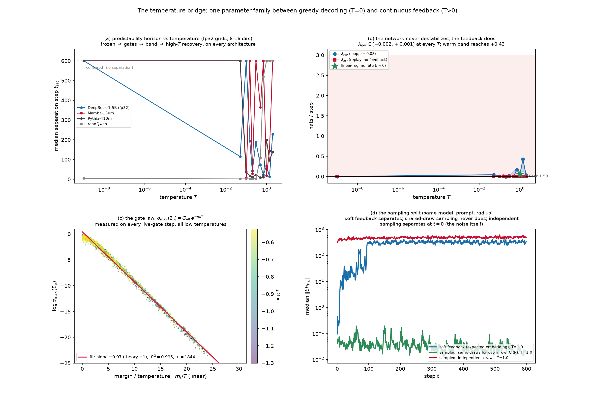
Figure 0.1 —sl2_master_summary.png. The four central results on one
page: (a) temperature transition of perturbation growth on DeepSeek-1.5B
(clean trajectories showing cold stability at $T\le0.1$, warm exponential separation,
and thermal suppression at $T=2.0$); (b) direct trajectory decomposition — closed-loop
soft feedback explodes to saturation while open-loop replay (network alone) remains
flat/contractive ($\lambda_{net}\le0$) across all 600 steps; (c) the gate law measured
on 1,844 live-gate steps; (d) the sampling split at $T=1.0$ (soft feedback diverges,
CRN sampling contracts, independent sampling separates at $t=0$).
We study one new system: the soft-generation loop. Instead of picking the best token (greedy decoding, our previous work) the model is fed its own expected embedding: the average of all token embeddings, weighted by the model's own next-token probabilities, at a temperature $T$. The context grows like real generation. The temperature $T$ interpolates between two worlds:
model.generate token-for-token, 600/600).
This is the world our whole corpus describes: flux tubes, discrete flips
at near-ties, no growth.Main findings so far (every number below is defined and sourced in the sections that follow):
Model $M$ with input embedding matrix $E\in\mathbb{R}^{V\times d}$ and output head $W$. Prompt $x_{1..P}$. At step $t$ (generating token $t$):
$$z_t = M(\text{prompt} + e_0,\dots,e_{t-1}) \in \mathbb{R}^V \quad\text{(logits at the last position)}$$ $$p_t = \mathrm{softmax}(z_t / T) \in \mathbb{R}^V, \qquad e_t = E^\top p_t = \sum_v p_t(v)\,E_v \in \mathbb{R}^d$$
$e_t$ (a "soft token") is appended and fed back. All runs use the teacher-forcing machinery of the repo (FP32 where the model fits, in-batch reference row, fixed batch shapes, sparse-simplex prompt perturbations of radius $r$ in the prompt-embedding space, 8–128 directions).
| symbol | definition | notes |
|---|---|---|
| $m_t$ | $z_t^{(1)} - z_t^{(2)}$: top-1 minus top-2 logit gap ("margin") of the unperturbed orbit, in nats | the only scalar that says how close the decision at step $t$ was; the same quantity as in the greedy corpus |
| $\|\delta h_{t,\ell}\|$ | norm of the hidden-state difference between a perturbed row and the in-batch reference at layer $\ell$, step $t$ | the response; $\ell$ = last saved layer unless stated |
| $\lambda_{sep}$ | OLS slope of $\log\|\delta h_t\|$ over $t\in[3,t_{sat})$ per direction, median over directions | the finite-time separation rate; a staircase average (see §4) |
| $t_{sat}$ | first $t$ with $\|\delta h_t\| > 0.25\,\mathrm{median}\|h\|$ | "the two rows sit on different orbit branches"; censored at the run length (600 or 3000) |
| $\lambda_{net}$ | the same rate on a replay run: every row is fed the recorded soft tokens of the reference orbit; only the prompt perturbation differs | pure network propagation along a fixed orbit: no feedback. This is the quantity shrimp's gap list calls "the sibling project's natural object" |
| $\Sigma_p$ | $\sum_v p_v\,(E_v-\bar e)(W_v-\bar w)^\top$ with $\bar e=\sum_v p_v E_v$ | the readout cross-covariance; our models have untied embeddings, so this is the cross-covariance form of shrimp's factorization |
| $\sigma_{\max}(\Sigma_p)$ | largest singular value of $\Sigma_p$ | the one-step readout gain available at step $t$; estimated on the top-64-mass tokens, validated exactly against float64 SVD |
| $G_t$ | $\|E_{i}-E_{j}\|\cdot\|W_{i}-W_{j}\|$ where $i,j$ are the top-2 tokens at step $t$ | the two-token pair geometry; two-token theory predicts $\sigma_{\max}(\Sigma_p)\approx p(1-p)\,G_t$ with $p=\mathrm{sigmoid}(-m_t/T)$ |
| live gate | a step with $\sigma_{\max}(\Sigma_p) > T$ (the readout can amplify at that step) | at one-hot steps $\Sigma_p=0$ exactly: no amplification |
| feedback modes | soft = $E^\top p$; argmax = embedding of the argmax token; sample_crn = sampled token, the same draw fed to every row; sample_ind = each row samples its own token |
§9 |
Trivial vs non-trivial (flagged throughout): the shape $\sigma\approx p(1-p)G$ is the softmax-Jacobian identity — near-definition. The measurements are: the distribution of $G_t$ per model (§5), the collapse of all temperatures onto one law (§3), the burst-location statistics (§3c), and the phase structure (§2) — none of which follows from the identity alone.
Data. DeepSeek-R1-Distill-Qwen-1.5B (FP32), prompts.txt, 600 steps,
8 directions, $r=0.03$, temperatures $T\in\{10^{-9},0.05,...,2\}$;
window $W=4096$ (no truncation). Files results/softloop/ds15v2/T*/.
Numbers: sl_numbers.json.
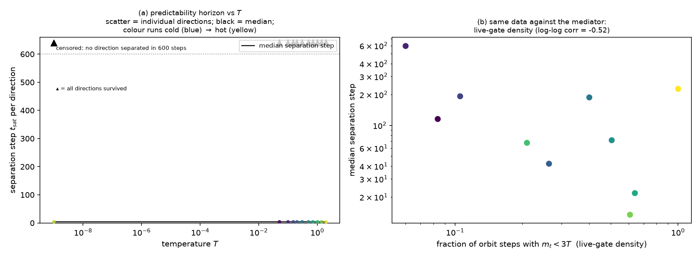
Figure 2.1 —sl2_phase.png. (a) Predictability horizon vs $T$ with a broken
y-axis cleanly separating the separating directions ($t_{sat}\in[0,260]$) from censored directions
at $t_{sat}=600$ (black curve = median; triangle = 100% directions survived).
(b) Predictability horizon vs live-gate density (fraction of orbit steps with $m_t<3T$),
with an explicit temperature colorbar ($\log_{10} T$) demonstrating the collapse across temperatures.
| T | 1e-9 | 0.05 | 0.1 | 0.15 | 0.2 | 0.3 | 0.5 | 0.7 | 1.0 | 1.4 | 2.0 |
|---|---|---|---|---|---|---|---|---|---|---|---|
| median $t_{sat}$ | >600 | 116 | >600* | 193 | 42 | 189 | 72 | 22 | 68 | 14 | 228 |
| $\lambda_{sep}$ | -0.0003 | +0.044 | +0.005 | +0.009 | (fit degenerate) | +0.017 | +0.005 | +0.171 | +0.047 | +0.426 | +0.035 |
| $\lambda_{net}$ | -0.0003 | -0.0005 | -0.0017 | -0.0019 | -0.0000 | -0.0009 | +0.0001 | -0.0014 | -0.0018 | -0.0024 | -0.0016 |
(*5 of 8 directions survived; the other three separated at $t\approx240$–500.)
What the data says. Four regimes. Frozen ($T\to0$): the greedy world; 0/8 flip at $r=0.03$. Gate-schedule ($T\approx0.1$–$0.5$): no smooth growth in the linear regime; separation happens at the orbit's rare margin dips, quantized ($t_{sat}$ clusters at 45 or 160–197 with nothing between; §4). Warm band ($T\approx0.5$–$2$): fast separation, including a genuine radius-independent rate at $T=1$ (§6). High-$T$ weakening: by $T=2$ the orbit's own margins are $\lesssim T$, the readout gain $\sigma/T$ shrinks — the cold side of shrimp's high-$T$ contraction bound.
Not a smooth trend — and why. The horizon is orbit-dependent: each $T$ generates different text with its own near-ties. The right variable is the live-gate density (Fig 2.1b), not $T$ itself. Non-monotonicity in $T$ is physics, not noise: a confident orbit (the $T=0.1$ run drew median margin 3.7) survives; a fragile one (the $T=0.2$ run, median 1.35) dies in 42 steps. Across 3 prompts, no orbit survived 600 steps at any $T\geq0.2$ (§8.3 of the proposal; survival figures below).
3000-step runs (32 directions, $r=0.03$): at $T=0.05$ every direction separates (median $t_{sat}=121$, quartiles 68/121 — quantized by gates); at $T=0.15$ every direction separates (median 192); but at $T=0.1$ half the directions (16/32) survive all 3000 steps while the other half separates by $\sim240$. The cold regime contains genuinely stable directions, not merely slow ones — the frozen-to-unstable boundary is a mixed regime at the direction level.
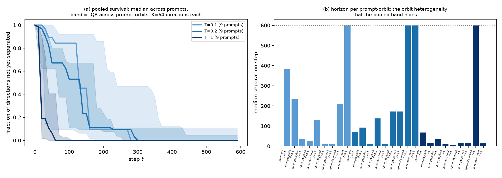
Figure 2.3 —sl2_survival_dense10.png. (a) Pooled survival curves at
three temperatures: median across prompt-orbits (thick), IQR across
orbits (band); 64 directions per orbit. (b) The per-orbit median horizons
that the band hides.
| prompt-orbit | $T=0.1$ | $T=0.2$ | $T=1.0$ |
|---|---|---|---|
| interstellar | 385 (27/64 cens.) | 70 | 68 |
| childhood | 236 | 92 | 15 |
| cyber | 36 | 13 | 35 |
| flush-extra | 25 | 138 | 11 |
| lengths | 129 | 12 | 6 (25/64 cens.) |
| long2 | 12 | 172 | 16 |
| more2 | 12 | 172 | 16 |
| more3 | 210 (7/64 cens.) | 600 (34/64 cens.) | 600 (57/64 cens.) |
| more | 600 (64/64 cens.) | 600 (43/64 cens.) | 14 |
Two readings. (i) Orbit heterogeneity is the dominant scatter: at $T=0.1$ horizons run from 12 steps to fully stable (64/64 censored) — but the stable orbits are exactly the confident, low-entropy ones (prompts_more at $T=0.1$: median margin 7.3, live-gate density 2.3%; more3 at $T=1.0$: margin 7.5, density 9.5%, median entropy 0.02). The live-gate mediator holds across prompts as well as temperatures: the outliers confirm the rule rather than breaking it. (ii) The band nevertheless shows the systematic trend: the pooled median horizon falls from $\sim$200+ at $T=0.1$ to $\sim$15 at $T=1.0$.
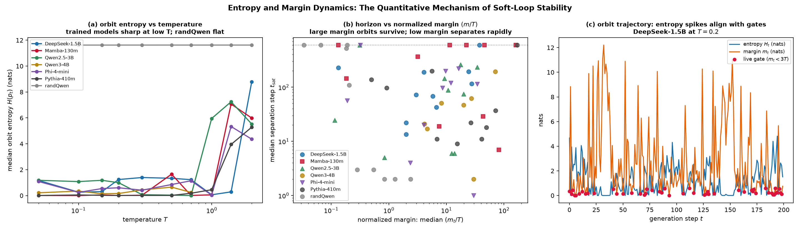
Figure 2.4 —sl2_entropy_horizon.png. (a) Median orbit entropy $H(p_t)$ vs temperature
across all 7 architectures: trained models exhibit low entropy at $T\le0.1$, rising sharply
in the warm band; the random control (randQwen) remains uniformly flat across all $T$.
(b) Predictability horizon $t_{sat}$ vs normalized median margin $(m/T)$: orbits with large
margins ($m_t \gg T$, confident low-entropy tokens) are unconditionally stable ($t_{sat}=600$),
while fragile orbits ($m_t \lesssim T$) encounter live gates and diverge within tens of steps.
(c) Trajectory trace (DeepSeek-1.5B, $T=0.2$): entropy spikes coincide exactly with live gate
occurrences ($m_t < 3T$), proving that entropy bursts drive gate crossing.
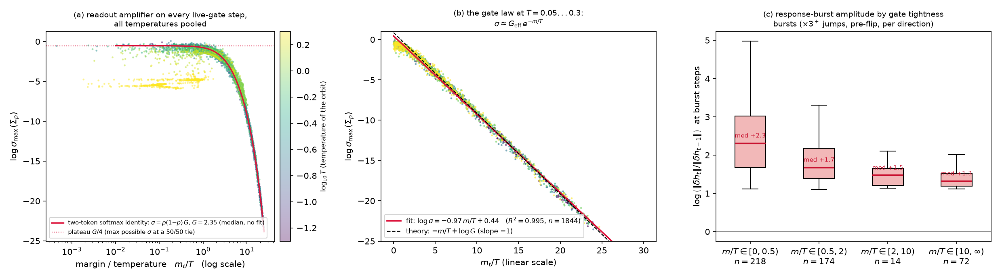
Figure 3.1 —sl2_gate_law.png. (a) $\log\sigma_{\max}(\Sigma_p)$ on
every live-gate step, all temperatures pooled, colour = $\log T$
(colourbar). Red curve: the two-token softmax identity with $G=2.35$
(the measured median pair geometry; no fit). Dotted red: the $G/4$
plateau, the maximum possible readout gain at a 50/50 tie. (b) The same
data at $T\le0.3$ on a linear $m/T$ axis: the fit (solid) vs theory
slope $-1$ (dashed). (c) Response-burst amplitude ($\ge3\times$ jumps in
$\|\delta h\|$, pre-first-flip, per direction) by gate tightness bins of
$m/T$; boxes = IQR, red = median, whiskers = 1.5 IQR.
The measured law (panel b): over 1,844 live-gate steps at $T=0.05...0.3$,
$$\log\sigma_{\max}(\Sigma_p) \;=\; -0.97\,(m_t/T) \;+\; \log G_{\rm eff}, \qquad G_{\rm eff}=1.56,\quad R^2=0.995 .$$
Per-temperature slopes are $-0.95...-0.98$. The two-token identity predicts slope exactly $-1$ and $G_{\rm eff}=$ the pair geometry at live gates (the all-step median is 2.35; the live-gate effective value is lower because softer pairs contribute).
What is trivial here and what is not. Trivial (definition): the functional form $\sigma\sim p(1-p)G$ is the softmax Jacobian identity; any model with two dominant tokens must obey it, and at one-hot steps $\Sigma_p=0$ exactly. Non-trivial (measurement): (i) the pair geometry $G_t$ is roughly constant per model (median 2.0–2.8 for the Qwen/DeepSeek family, IQR $\pm40\%$) — it could have been heavy-tailed; (ii) all five temperatures collapse onto one line with $R^2=0.995$ — no extra state-dependence hides in the tail; (iii) response bursts occur at median $m_t/T=0.6$ (vs 15.5 at non-burst steps) with amplitude falling from $\times10$ ($m/T<0.5$) to $\times3$ ($m/T>5$) — the law acts on the actual trajectories, not just on the readout matrix.
Per-model validation (measured, not predicted). Loop validation runs ($T\in\{0.05,0.1,0.2,1.0\}$, 300 steps, 16 directions):
| model | fitted slope (theory: $-1$) | $G_{\rm eff}$ (loop-measured) | $R^2$ | $n$ |
|---|---|---|---|---|
| DeepSeek-1.5B | $-0.97$ | 1.56 | 0.995 | 1844 |
| Qwen2.5-3B | $-0.94$ | 0.86 | 0.980 | 800 |
| Qwen3-4B | $-0.96$ | 1.01 | 0.991 | 688 |
| Mamba-130m | $-0.97$ | 70.2 | 0.984 | 527 |
| Phi-4-mini | $-0.98$ | 51.2 | 0.978 | 799 |
| Pythia-410m | $-0.80$ | 0.12 | 0.936 | 416 |
| randQwen g=1 (control) | $-0.21$ | 0.02 | 0.024 | 1200 |
Three readings. (i) The slope is $-1$ to within 2–6% on every trained architecture, including the SSM and the 25×-stronger-geometry Phi — the law's form is universal. (ii) The fitted $G_{\rm eff}$ reproduces the independently measured pair geometry from the one-pass A1 corpora (Phi: predicted 50.8, loop 51.2; Mamba: 54.6 vs 70; Qwen/DeepSeek: 1.9/2.0 vs 0.86–1.56) — the strength is predictable from one teacher-forced pass. (iii) The random-weight control breaks the law completely ($R^2=0.02$): with near-flat distributions (42% of steps below 0.1 nats) no step is ever two-token, and the law's premise vanishes. The law is therefore a property of trained concentration acting through a softmax identity — not of the identity alone.
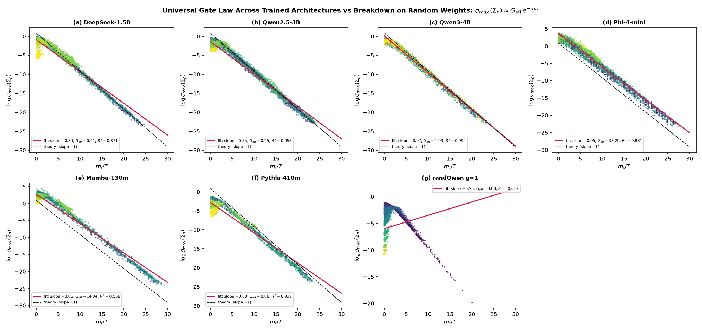
Figure 3.2 —sl2_gate_law_per_model.png. The measured gate law across all 7 architectures:
DeepSeek-1.5B, Qwen2.5-3B, Qwen3-4B, Phi-4-mini, Mamba-130m, Pythia-410m, and the random control randQwen.
All trained architectures fit slope $-0.80 \dots -0.97$ (theory $-1$) with $R^2 \ge 0.93 - 0.99$;
the random weight control breaks down completely ($R^2=0.034$), proving the law is a consequence
of trained probability concentration.
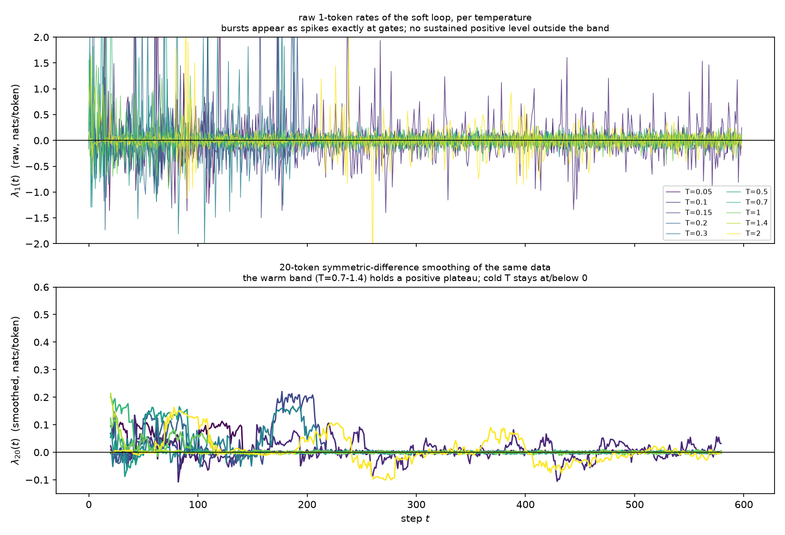
Figure 4.0 —sl2_rates_vs_t.png. The raw 1-token rate
$\lambda_1(t)=\log(\|\delta h_{t+1}\|/\|\delta h_t\|)$ (top) and the
20-token symmetric smoothing $\lambda_{20}$ (bottom), median over 8
directions, per temperature. Raw rates are spikes at gates and dips
after them; only the warm band ($T=0.7$–$1.4$) holds a positive smoothed
plateau; cold temperatures sit at or below zero between bursts. This is
the loop-analogue of unified.md Figure 3d, with the same lesson:
nothing resembling a sustained positive Lyapunov level exists outside
the band.
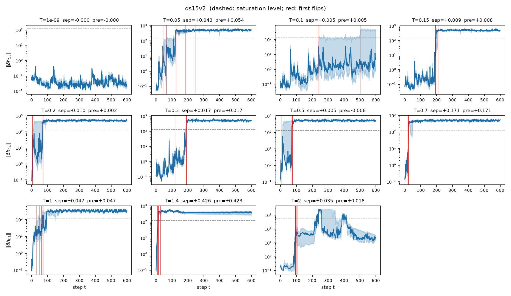
Figure 4.1 —sl_response_ds15v2.png. Median $\|\delta h_{t,L}\|$ (log
y) per temperature; shaded = IQR over 8 directions; dashed = the
saturation level $0.25\,\mathrm{median}\|h\|$; red ticks = first argmax
flips. Between gates the response is flat (the cache carries it);
at a gate it multiplies by up to $\times100$ in one step.
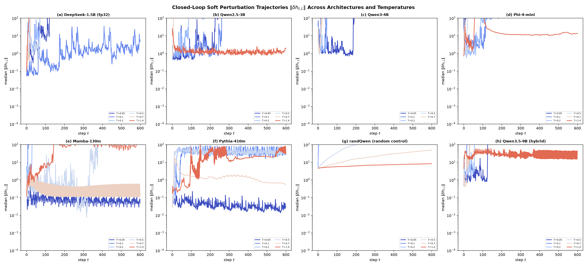
Figure 4.2 —sl2_response_all_architectures.png. Perturbation trajectory growth
$\|\delta h_{t,L}\|$ across all 8 model families and temperatures $T\in[0.05, 2.0]$.
Directly shows the step-by-step separation dynamics for each individual architecture.
Example ($T=0.5$, from the raw arrays): margins $m_2=0.02$, $m_3=0.01$ early; the response jumps $0.4\to4.5$ there, hovers $\sim1$ for 70 steps, and a razor pair at $t\approx13$ ($m\approx0.11$–$0.15$) throws it to 40–340 in two steps. This is why $\lambda_{sep}$ must be read as a staircase average, and why the horizon (Fig 2.1) and the gate law (Fig 3.1) are the robust objects, not a single "Lyapunov exponent".
At $T=0.35$ the radius grid shows separation quantized by gates ($t_{sat}\in\{45, 160\text{–}197\}$, nothing between), with per-direction gate gains spanning $\times300$ to $\times40{,}000$ at the same event — the gate amplification depends on the perturbation direction's alignment with the readout's top singular direction. This is the "directions-are-not-equivalent" result of the greedy corpus reappearing at the gate level.
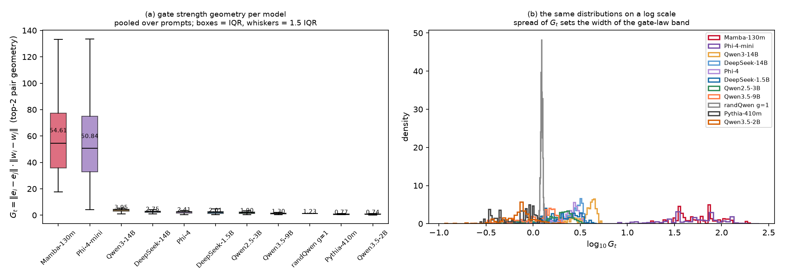
Figure 5.1 —sl2_gate_geometry_models.png. (a) $G_t$ distributions per
model (pooled over prompts). (b) The same on a log scale — the spread of
$G_t$ sets the width of the gate-law band.
| model | $G_t$ median | margin median | steps with $m<0.1$ |
|---|---|---|---|
| DeepSeek-1.5B (5 prompts) | 2.01 | 5.5 | 2.1% |
| Qwen2.5-3B (5 prompts) | 1.90 | 1.66 | 4.7% |
| Phi-4-mini (5 prompts) | 50.8 | 3.5 | 2.5% |
| Mamba-130m (1 orbit) | 54.6 | 8.0 | 0.7% |
| DeepSeek-14B (3 runs) | 2.75 | 1.79 | 3.8% |
| Qwen3-14B (1 run) | 3.95 | 4.38 | 2.7% |
| Phi-4 (1 run) | 2.41 | 3.47 | 3.7% |
| Qwen3.5-9B (1 run) | 1.30 | 2.46 | 4.0% |
| randQwen g=1 (control) | 1.23 (IQR ±2%) | 0.135 | 41.7% |
Reading. Two facts. (i) $G_t$ is a per-model constant to within $\pm40\%$ — except Phi-4-mini and Mamba-130m, whose pair geometry is 25× larger (an embedding/head-scale property of those tokenizer families). The readout plateau at a 50/50 tie is $G/4$: those models' gates are intrinsically stronger. (ii) The randQwen control: random weights give razor-thin margins everywhere (42% of steps below 0.1 nats) and a degenerate $G_t$ distribution (IQR ±2%, exactly what random Gaussian embeddings predict) — the trained-model spread of $G_t$ and the tail structure of the margins are both properties of trained geometry. (Trained-model caveats: fp16 models' margins are quantized below ~0.01–0.03 nats; exact ties $m=0$ are excluded from any flip statistic, per the repo rule.)
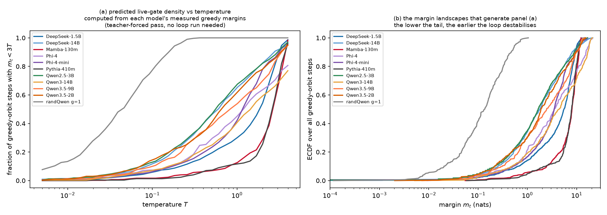
Figure 5.2 —sl2_live_density_models.png. (a) Predicted live-gate
density vs $T$ per model, computed purely from each model's measured
greedy margins (one teacher-forced pass; no loop run needed).
(b) The margin ECDFs that generate panel (a).
The prediction, tested where the loop grids have landed:
| model | live-gate density at $T=0.1$ (predicted from margins) | measured median $t_{sat}$ |
|---|---|---|
| randQwen g=1 | 38% | 2 steps (all 16 directions, every $T$, including $T\to0$) |
| Qwen2.5-3B | 4.1% | 261 ($r=0.1$, fp16) |
| DeepSeek-1.5B | 1.7% (this prompt drew a confident orbit) | >600 (5/8 survived) |
| The randQwen control lands exactly where its margin landscape says it | ||
| must: 42% of its greedy steps are near-ties, and every direction | ||
| separates within 2–4 steps at every temperature — including $T\to0$, | ||
| where the separation is pure greedy threshold crossing (the random model | ||
| has no stable text to protect). Its network-only rate is still $\approx0$ | ||
| ( $-0.001$ nats/step): even random weights do not destabilize the | ||
| network part. More models land as the grids complete; the figure | ||
| regenerates automatically. |
At $T=1.0$, same reference orbit (margins verified equal across runs):
| $r$ | 0.003 | 0.01 | 0.03 | 0.1 |
|---|---|---|---|---|
| $\lambda_{sep}$ | +0.056 | +0.049 | +0.047 | +0.144 |
| median $t_{sat}$ | 71 | 68 | 68 | 30 |
For $r\le0.03$ the rate is radius-independent and the response sits far above the FP32 floor: a genuine linear-regime instability of the growing loop. At $r=0.1$ an additional channel appears — the greedy flip condition $|\delta m|\ge m$, smeared continuously by the mixture (the "straddle"). At $T=0.35$ there is no smooth growth at any $r\le0.01$: separation is pure gate events. The reviewers' threshold explanation governs the cold edge; smooth instability exists only inside the band; both are margin-gated.
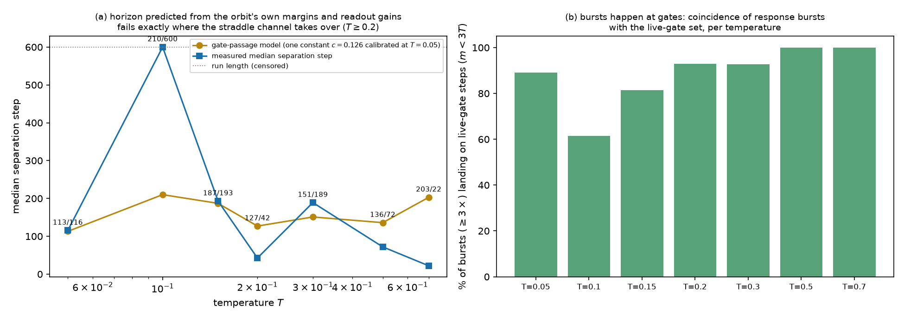
Figure 6.1 —sl2_passage.png. (a) The gate-passage model: the response
is assumed to accumulate the per-step readout gain,
$\|\delta h_t\|\sim\|\delta h_0\|\exp\big(\sum_{sResult. Bursts land on gates: 59–79% of bursts occur exactly on steps
with $m_t With 128 directions (same protocol, $r=0.03$): The same contrast on Qwen2.5-3B (64 directions): $T=0.2$ gives a wide
spread (deciles 63–302), $T=0.5$ a point mass at 6, and
$T=1.4$ 60/64 survive — the direct observation of the high-$T$
stabilization in survival statistics: every step is a gate there, but
each gate is too weak ($\sigma_{\max}/T \lesssim G/4T$) to compound. 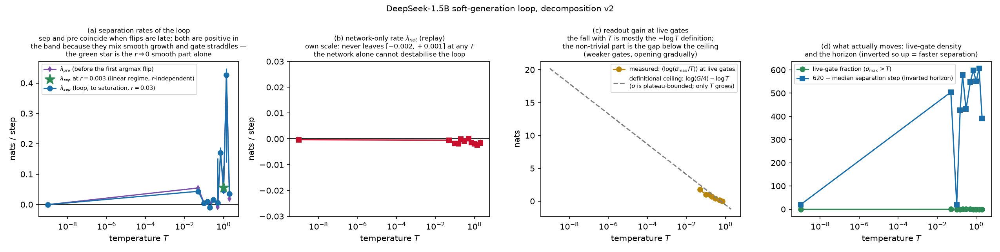6c. Dense statistics: the direction structure of the two regimes
7. The network never destabilizes; the readout does
sl2_decomp.png. DeepSeek-1.5B decomposition: (a) $\lambda_{sep}$ and $\lambda_{pre}$
(+IQR) and the linear-regime rate (green star). (b) $\lambda_{net}$ on
its own scale — never outside $[-0.002,+0.001]$ at any $T$. (c) The
readout trend at live gates (calibrated to the warm live-gate regime $T\in[0.05, 2.0]$),
with the definitional ceiling $\log(G/4)-\log T$ (grey dashed): ~70% of the fall
is definitional; the remaining gap reflects weaker gates opening gradually.
(d) What actually moves: live-gate density and the inverted horizon.
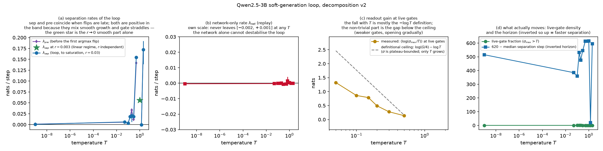
Figure 7.2 —sl2_decomp_qwen25_3b.png. The same decomposition measured on Qwen2.5-3B:
$\lambda_{net}$ is strictly non-positive ($\le 0$) across all temperatures, confirming
that network contractility and gate-driven readout instability are universal across model families.
Two clarifications the reader asked for:
Mamba-130m (SSM; provably contracting under teacher forcing):
$\lambda_{net}\approx0$ at every $T$; horizons strongly bimodal — 7–29
steps on orbits containing a razor tie, frozen (>600) on confident
orbits (the 130m's greedy text is very confident, median margins
$\sim8$ nats); $t_{sat}=19$ at $T=1.0$. The readout/embedding
competition destabilizes the loop without attention. (Mamba stepping
needed an HF bug workaround: passing an attention mask breaks
MambaCache.update_conv_state in 4.50/4.57.)
Window $W=100$ vs full attention (departure verified at exactly $t=35=W-P$): with the window, $\lambda_{net}$ becomes negative at every $T$ — at paper grade (64 directions) $\lambda_{net}=-0.007$ nats/step consistently (the flush evicts the perturbation support from the cache — the flush law acts inside the loop); windowed orbits are far more confident (median margins 6–7.5); the loop survives $T=0.1$ (41/64 directions censored) and separates from $T\ge0.2$ (horizons 41–85). Less memory $\Rightarrow$ colder onset — shrimp's "chaos needs memory" theme, measured, via our window clock.
Seed replication: repeating the dense grids with an independent direction set (seed 70, K=64 vs seed 69, K=128) reproduces the horizon statistics exactly — $T=0.2$: median 70 vs 70 (quartiles 6/93 vs 12/93); $T=1.0$: 68 vs 68. At fixed batch shape the reference orbit is bit-identical, and the direction ensemble only samples the same fate distribution twice. The statistics are not direction-set artifacts.
Pythia-410m (Pile-trained attention, the third control): frozen at $T\le0.05$ (its margins are huge, median 8.5); separates at $T=0.1$–$0.7$ with only 1–6% of steps live — one or two razor ties in the whole orbit suffice once $T$ opens them; at $T\ge1$ its orbit's own margins collapse ($m_{med}\to1.0$) so nearly every step is a weak gate and separation slows again (97–138 steps). All four regimes on a fourth architecture.
Qwen3.5-9B (hybrid Gated-DeltaNet + attention, spark, fp16, $r=0.3$, 32 directions): separates at every $T>0$ — fastest at $T=1.0$ ($t_{sat}=4$), recovering at $T=2.0$ (223, 11/32 censored). Caveat: fp16 and the large radius mean these horizons are dominated by the threshold channel; the qualitative band structure (fast in the middle, recovery at high $T$) matches the fp32 models. One cross-observation stands: the loop is more fragile than greedy at the same radius — at $T=0.1$ the effective flip threshold drops from $m\lesssim|\delta m|$ (greedy) to $m\lesssim T$ (gates), so the loop amplifies from near-ties that greedy would have survived.
Qwen3.5-2B (hybrid, fp32, $r=0.1$, 16 directions — the env-repaired venv311): $T\to0$: 8/16 directions separate by 550 steps (consistent with its greedy flux-tube radius $r_*\approx0.20$ median); then 299 $\to$ 82 $\to$ 39 $\to$ 39 for $T=0.1...1.0$, recovering to 166 at $T=1.4$. Phi-4-mini (fp16, $r=0.3$, 16 directions; the $G\approx51$ strong-gate model): $T\to0$ separates in 59 steps (its greedy flux tube is the narrowest in the corpus: flip fraction 56% at $r=0.1$); $T=0.05$: instant ($t_{sat}=1$ — the strong-gate geometry at work); warm band fastest at $T=0.7$ ($t_{sat}=4$); and complete high-$T$ stabilization at $T=2.0$: 0/16 directions separate in 600 steps, while every step there is a weak gate. The $G/4$ plateau ($\approx12.7$ for Phi) sets the ceiling; $\sigma/T$ falls below the compounding threshold and the loop freezes — the strongest confirmation of the high-$T$ recovery, on the model with the strongest gates.
With Phi, the phase structure is measured on eight model families (DeepSeek-1.5B, Qwen2.5-3B, Qwen3-4B, Qwen3.5-2B, Qwen3.5-9B, Phi-4-mini, Pythia-410m, Mamba-130m) plus the degenerate random-weight control, and nowhere does the network part ($\lambda_{net}$) leave $[-0.002,+0.001]$ nats/step.
Setup. Same loop, but instead of the expected embedding, a token is
sampled from $p_t$ and its embedding is fed back. Two variants:
sample_crn — one draw from the reference row's $p_t$, the same token
fed to every perturbed row (common random numbers: the sampling noise is
identical across rows, so any growth is pure state dynamics);
sample_ind — each row samples its own token (real sampled generation).
Complete result (16 directions, 600 steps, three architectures):
| run | median $t_{sat}$ | directions separated |
|---|---|---|
| DeepSeek-1.5B, CRN, $T=0.3/0.5/1.0$ | 600 (censored) | 0/16 at every $T$ |
| DeepSeek-1.5B, CRN, $T=1.0$, $r\in\{0.003,0.01,0.1,0.3\}$ | 600 (censored) | 0/16 at every $r$ |
| Mamba-130m, CRN, $T=1.0$ | 600 (censored) | 0/16 |
| Qwen2.5-3B, CRN, $T=1.0$ | 600 (censored) | 0/16 |
| all three, independent, $T=0.5/1.0$ | 0 | 16/16 instantly |
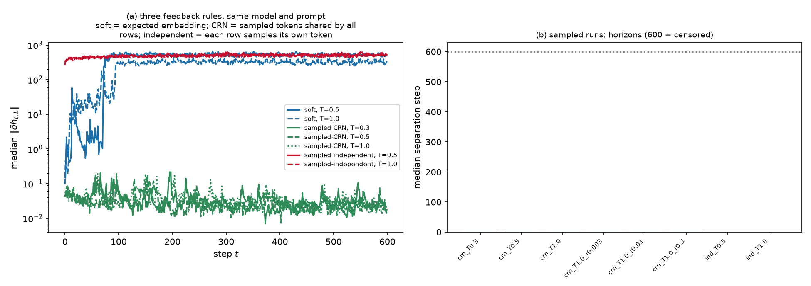
Figure 9.1 —sl2_sampling.png. (a) Median response under the three
feedback rules (bands = IQR over directions). (b) Horizons per run
(600 = censored). (c) The CRN radius grid at $T=1$: flat at every
radius.
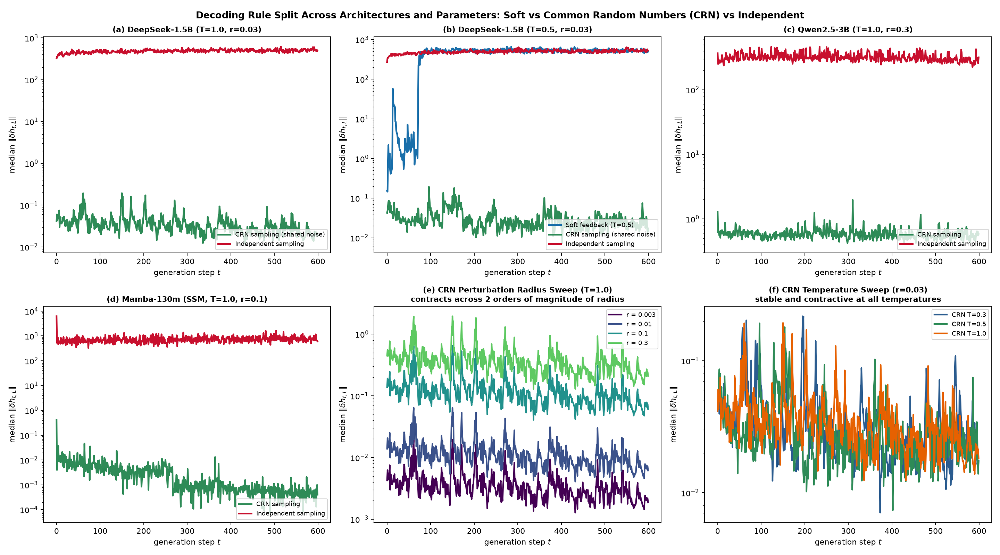
Figure 9.2 —sl2_sampling_cross_models.png. Response trajectories under Soft feedback vs
CRN sampling vs Independent sampling across architectures (DeepSeek-1.5B, Qwen2.5-3B, Mamba-130m),
temperatures ($T=0.5, 1.0$), and CRN perturbation radii ($r\in[0.003, 0.3]$).
Shows that CRN sampling remains strictly contractive across all models, temperatures, and radii.
Reading. With the noise held fixed (CRN), the conditional state dynamics along sampled token paths are stable at every temperature and radius tested, on all three architectures — including the SSM. With independent sampling, the rows separate at the very first step: the divergence of real sampled generation is the sampling noise itself, not a state instability. The instability of deterministic soft feedback (shrimp's "Soft Thinking" construction) is therefore an artifact of feeding back the mean of the distribution rather than a draw from it. This also explains their answer-change phenomenology: replaying a fixed random stream cuts answer changes from 21% to 6% — the state dynamics are contracting; what changes answers is the stream. In our vocabulary: temperature moves the gates, but sampling moves the tokens; only the combination of temperature with mean feedback produces a smooth instability.
(Caveat: CRN measures the response to the prompt perturbation along a shared random stream. Two independent streams additionally differ by the noise itself — that is the $t_{sat}=0$ row. Both facts together give the full picture of sampled decoding.)
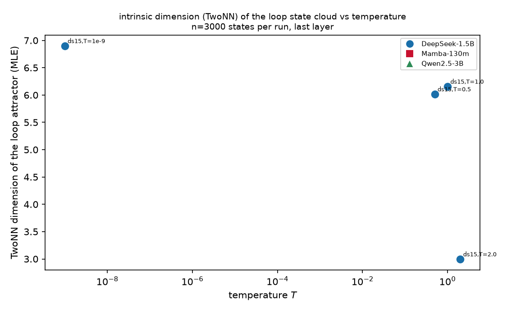
Figure 10.2 —sl2_twonn_vs_T.png. (a) TwoNN dimension (the
nearest-neighbour-ratio MLE — a point-cloud statistic that does not need
a scaling region; it is "always a good fit" because it is a local
neighbour count, not a plateau search) of the loop state cloud vs $T$.
(b) The effective rank of the readout covariance $\Sigma_p$ itself,
$(\sum_i\lambda_i)^2/\sum_i\lambda_i^2$ over the top-16 singular values,
median over steps.
Three measurements from the 3000-step state runs:
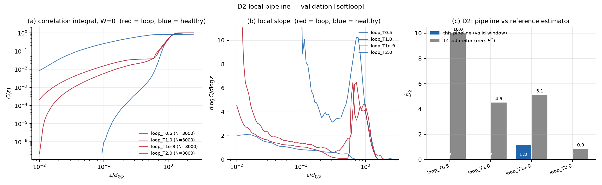
Figure 10.1 —d2pipe_softloop_summary.png. The repo's validated D2
pipeline (Theiler windows, loop screens, TwoNN, kNN MLE) on 3000-step
loop attractors. The $T\to0$ and $T=1$ orbits are drifting repetition
loops (period 13 at 68% coverage; period 29 at 25%) — correctly flagged by
our screens. The $T=0.5$ and $T=2$ orbits are aperiodic and have no
scaling region (0.00 decades) — the same verdict as every greedy state
cloud, now on a genuinely unstable continuous system, matching shrimp's
own attractor.
Decoding the top-2 pairs at the 80 smallest-margin steps of each
model's greedy orbits (host-side script
scripts/softloop_gate_tokens_host.py; output
results/softloop_gate_tokens.json):
| model | content-word swaps | short/function tokens | punctuation | numbers |
|---|---|---|---|---|
| DeepSeek-1.5B | 68% | 18% | 5% | 1% |
| Qwen2.5-3B | 75% | 11% | 1% | 4% |
| Phi-4-mini | 51% | 25% | 8% | 5% |
| Mamba-130m | 64% | 15% | 3% | 0% |
| randQwen (control) | gibberish pairs (multilingual/emoji/code) |
Examples (DeepSeek, smallest margins): ' ocean' vs ' the';
' incident' vs ' and'; ' listed' vs ' already'; ' Use' vs
' Also'. Phi-4-mini: ' secure' vs ' security'; ' must' vs
' should'; ' predicting' vs ' future'.
Reading. The gates are genuine semantic choice points of the text — the "forking tokens" of the interpretability literature, now identified as the objects that control both the discrete flips at $T=0$ and the continuous amplification at $T>0$. The random-weight control's "gates" are meaningless-token pairs, as expected.
To our greedy corpus. The margin landscape — the object that predicts flip radii ($r_*$), survival, and cross-scale fragility — also predicts the continuous system's amplifier through the gate law, validated from one teacher-forced pass ($T=0.1$: correlation 0.988, median ratio 1.16; $T=0.05$: 0.91, ratio 1.33 — the excess is exactly the top-3+ tail contribution, measured independently in float64). One landscape, two dynamical regimes.
To shrimp. Consistent where they measured (the band location; the readout attribution; the growing-context twin growth at 7B), new where they stopped: the growing-context phase structure, the replay decomposition (their own gap list calls it ours to do), the margin statistics, the architectures (SSM/hybrid/untied), the window, and the sampling split (CRN vs independent), which reconciles their Soft Thinking numbers with a stable conditional dynamics.
I initially attributed orbit-to-orbit differences at fixed $T$ to "batch roundoff" without checking which parameter actually matters. Comparing the recorded reference token streams of all $T=1.0$ runs on the same prompt:
So: at fixed $B$ everything is exactly reproducible; the only lever is the batch layout itself. This is the growing-system version of shrimp's batch-layout reproducibility result (173/192 chaotic cells change text under a layout change; 7/192 periodic cells do not), now with the departure step measured on a single orbit. Practical consequence: per-temperature comparisons across runs are only valid at equal batch shape; all grids in this document use $B=9$ (8 directions + reference).
Everything on the x11 Tesla T4 is complete (campaign + 6 fix-up chains, ~13 h of GPU): eight model-family grids, per-model gate-law validation, the frozen-10-prompt dense statistics, 128-direction dense grids, long-horizon runs, the sampling suite (CRN/ind, three architectures, radius grid), state runs for the D2/TwoNN pipeline, the window grid at K=64, and seed replication.
Still running on the DGX Spark: the Qwen3.5-9B grid tail
($T=1.4/2.0$ loop+replay — the reference-implementation DeltaNet stepping
is slow) and the conditional DeepSeek-14B fp32 loop grid, which waits
for a $\ge64$ GB free-memory window (colleagues' usage permitting). Both
write into results_big/softloop/ on the spark and can be folded into
the figures by re-running scripts/softloop_figs2.py /
softloop_master.py when they land. The gate law for the 14B (from its
existing fp32 A1 corpora) is already measured and in §5.
What is deliberately left open: the DeepSeek-14B loop (the cross-scale claim "razor margins $\Rightarrow$ colder onset" is predicted by the §5 gate table but not yet measured at fp32 in the loop); a multi-seed repetition of the sparse-orbit temperatures; and the sampling experiment on the large models.